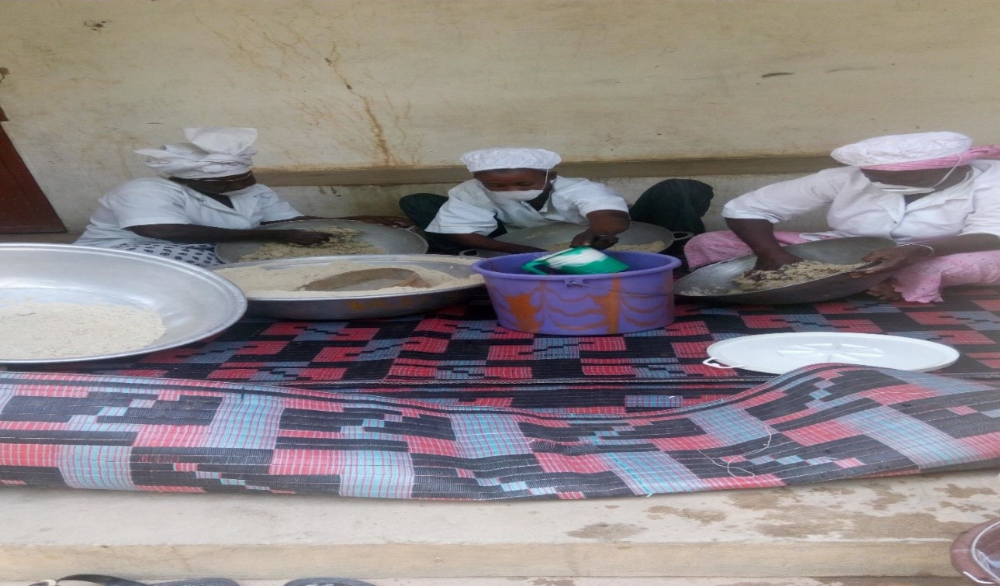

Pour la composante 1: Accès à l'éducation de 8 000 enfants déscolarisés, non scolarisés et ceux des Daaras, âgés de 9 à 15 ans dont 65% de filles
- Double finalité, option passerelle et insertion socio-économique pour un objectif « zéro déperdition »
- Formation alternée (théorie, pratique) articulée autour des enseignements-apprentissages et les projets productifs
- Mise en place de caisses scolaires de solidarité au sein des ECB gérées par les apprenants pour le développement de l'esprit d'entraide et de citoyenneté
- Introduction de la langue nationale dès la première année qui améliore la qualité et le niveau d'assimilation des enseignements/apprentissages avant l'utilisation de la langue française ou arabe
- Formation initiale des 200 volontaires et 40 superviseurs et en Approche par les Compétences (APC)
- Formation en Approches par les compétences des 200 volontaires et 40 superviseurs
- Mise en place de 107 Projets Productifs sur les 190 prévus dans les ECB
- Construction des ECB: 190 Construites et Equipées dont 08 CREPA (Centres de Ressources Educationnelles pour Adultes)
- 4681/7600 enfants (61,59%) dont 61,33 % de filles ont été enrôlés dans 190 Ecoles Communautaire de Base (ECB) et bénéficient d'une formation alternée (théorie, pratique) articulée autour des enseignements/apprentissages et les projets productifs (comme espace pédagogique et d'initiation aux métiers)
- Remise de prix aux apprenants les plus méritants des ECB du PALAM: 561 apprenants dont 361 filles soit 64,35% ont été primés sur l'ensemble des deux régions
- L'organisation de test de niveau standardisé et harmonisé des apprenants des ECB. Après seulement trois ans d'apprentissage, des cas de réussite ont été relevés à l'entrée en sixième et au CFEE. Ces apprenant (e)s venant de LOUMBOLE (Commune de NGAINT PATHE), de TOUBA ALY MBENDA (Commune de LOUR ESCALE) et de NDIOUDIOUF WANOCK (Commune de NGOGOM) poursuivent leur cursus scolaire au niveau des CEM de leurs communes d'origine. De même, vingt-trois apprenant(e)s ont réussi au CFEE Arabe et poursuivent leurs études dans des Ecoles Arabes de Mbour, Kaolack et Touba.
Pour la composante 2: Formation qualifiante de 3 000 adolescents et jeunes adultes analphabètes et déscolarisés, âgés de 16 à 24 ans.
- Sélection et Formation des 212 Maitres Artisans (MA) en Approche par les compétences (APC)
- Appui en équipements à 29 MA à Diourbel et 81 MA à Kaffrine soit 110/212 MA, compte tenu de l'enveloppe budgétaire disponible
- Formation des 212 MA (sélectionnés sur la base de leurs expériences avérées) du programme en Approche par les Compétences sur les différents curricula en vue de leur permettre de bien jouer leurs rôles de MA (formateurs)
- Neuf curricula ont été élaborés (couture, coiffure, transformation produits arachidiers, élevage, pépiniériste, menuiserie bois, menuiserie métallique, maçonnerie, mécanique, électricité)
- Formation par alternance de 2880 jeunes sur les 3000 ciblés par le programme, soit 96%, dans des ateliers artisanaux et centres ressources
- Alphabétisation fonctionnelle de 2880 jeunes sur les 3000 dans différents métiers soit 96%: une approche d'alphabétisation basée sur le métier
- Formation en gestion de 1 811/1800 jeunes soit 100.62%
- Préparation à la certification des compétences: 183 jeunes ciblés sur la base des référentiels existants pour subir les épreuves


Pour la composante 3: Autonomisation socio-économique de 10 000 femmes travailleuses âgées de 25 à 49 ans
- Formation des 180 facilitateurs (trices) techniques
- Formation technique de 9996/10000 femmes travailleuses soit 99,961% dans différentes filières
- Alphabétisation fonctionnelle basée sur leurs activités de 9996/10000 femmes travailleuses soit 99,96%.
- Formation en gestion de 5 539/5000 femmes formées en gestion (GERME 1) (110,78%)
- Mise à disposition de facilités (équipements d'allègement) pour un double objectif allègement et soutien aux microentreprises nouvellement créées


Visite GIE "BEUG FALLOU" de DIOLKHOSS (région de Kaffrine, commune GAINTH PATHE)

VISITE DE LA MICROENTREPRISE "BOK DIOM" DE NDINDY GOUYE EN TPA (REGION DE DIOURBEL, COMMUNE NDINDY)
VISITE DE LA MICROENTREPRISE DE "BOK DIOM" DE DIAKHAO SALOUM, EN TPC (REGION DE KAFFRINE, COMMUNE BOULEL)
Pour la composante 4: Dispositif de micro finance basé sur la Charia pour l'appui à l'auto emploi de 60% des jeunes et 50% des femmes formés
- Formation en gestion de 7350/6800 bénéficiaires (1811/1800 jeunes et 5539/5000 femmes) soit un taux global de 108,1%
- Encadrement technique des bénéficiaires par les Opérateurs
- Organisation de 548 sur 600 microentreprises sous forme de GIE
- Formulation de 560 microprojets des microentreprises
- Dépôt de 361 demandes de financement de microprojets de femmes et de jeunes pour un montant 643 177 479 FCFA auprès des SFD et 145 dossiers de financement ont été approuvés pour un montant de 269 724 404 FCFA
- Financement de 137 microprojets pour un montant de 217 855 363 FCFA selon le mode islamique « Mourabaha»


VISITE DE LA MICROENTREPRISE DE "BOK DIOM" DE DIAKHAO SALOUM, EN TPC (REGION DE KAFFRINE, COMMUNE BOULEL)

8 MARS JOURNEE INTERNATIONAL DE LA FEMME : EXPOSITION TRANSFORMATION DES PRODUITS ARACHIDIERS ET CEREALIERS DES FEMMES DE GIE BOK DIOM (VILLAGE DE DIOUMADA)